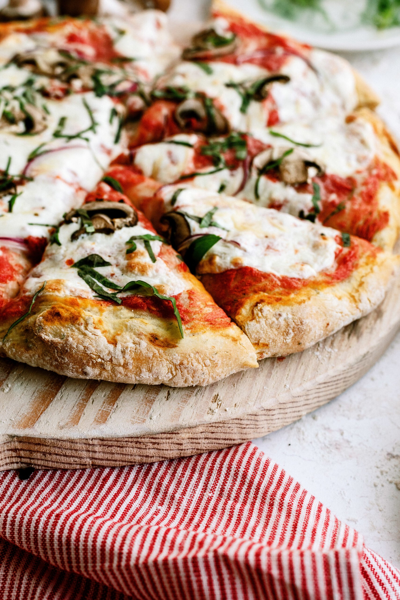

Pizza

Description
While it's sourdough that reigned supreme during the early days of quarantine, freshly baked focaccia quickly
followed suit. I'm guessing it's because focaccia is a whole lot simpler to make (save for the focaccia gardens)
and just as satisfying — even more so when topped with tomato sauce and three types of cheese.
Focaccia pizza just makes sense. A few simple additions let you enjoy the crisp, beloved bread as a dinner main
instead of just a vehicle for your favorite olive oil. It's all the comfort and indulgence of your favorite
pizza pie, turned up to its highest volume (you may never go back to thin crust). This is a pizza you sink into,
square by square, until your belly's so full it just might burst. Here's how to make the very best one,
featuring a bright no-cook tomato sauce, melty mozzarella, and puddles of creamy ricotta atop a plush
pillow of focaccia crust.
Ingredients
- 4 1/2 cups all-purpose flour, plus more as needed
- 3 teaspoons kosher salt, divided
- 1 1/2 teaspoons instant or active dry yeast
- 1 3/4 cups lukewarm water
- 6 tablespoons extra-virgin olive oil, divided
- 1 (14-ounce) can whole tomatoes, or 1/2 (28-ounce) can
- 2 cloves garlic
- 1 teaspoon red wine vinegar
- Red pepper flakes
- 8 ounces low-moisture mozzarella cheese, shredded (about 2 cups)
- 8 ounces whole-milk ricotta cheese (about 1 cup)
- 1 ounce Parmesan cheese, finely grated (about 1/2 firmly packed cup grated on a Microplane or 1/3 cup
store-bought)
- 4 large fresh basil leaves
Steps
- Mix the dough and let it rise. Place 4 1/2 cups all-purpose flour, 2 1/2 teaspoons of the
kosher salt, and
1 1/2 teaspoons instant or active dry yeast in a large bowl and stir with a wooden spoon or rubber spatula
to combine. Add 1 3/4 cups lukewarm water and 3 tablespoons of the extra-virgin olive oil and stir until no
dry flour remains and a shaggy dough forms. Knead in the bowl a few times, sprinkling with a little more
flour if needed, until a rough, sticky ball of dough forms. Tightly cover with plastic wrap and let rise at
room temperature for 2 hours.
- Chill the dough. After 2 hours, the dough will have puffed and doubled in size. Refrigerate
the bowl of
dough at least 8 hours and up to 24.
- Turn the dough out onto a baking sheet. Drizzle 2 tablespoons of the extra-virgin olive oil
onto a
13x18-inch rimmed baking sheet. Remove the bowl of dough from the refrigerator and use your hands to
transfer the dough to the prepared baking sheet (save the plastic wrap to use again to cover stretched dough
and wash the bowl to use for making the sauce). Turn to coat in the oil, then gently press and flatten the
dough until about 1-inch thick. (The dough will not reach the edges of the baking sheet.) Cover loosely with
plastic wrap and let rest for 10 minutes. Meanwhile, strain the tomatoes.
- Strain the tomatoes. Pour 1 (14-ounce) can whole tomatoes, or 1/2 (28-ounce) can with their
juices into a
fine mesh strainer set over the now-clean large bowl to drain the thin tomato water.
- Stretch and shape the dough. Uncover the dough and use your fingertips to stretch the dough
to the edges of
the baking sheet. If it starts to shrink back, let it rest for a few minutes, then try again. Cover again
and let rest until puffed and slightly risen, about 25 minutes. Meanwhile, heat the oven and make the sauce.
- Heat the oven.Arrange a rack in the lower third of the oven and heat the oven to 475°F.
- Make the sauce. Discard the tomato water that has accumulated in the bowl and pour the
strained tomatoes in
their sauce into the bowl. Carefully crush the tomatoes with your hands into bite-sized pieces. Grate or
mince 2 garlic cloves and add it to the bowl. Add the remaining 1 tablespoon extra-virgin olive oil, 1
teaspoon red wine vinegar, remaining 1/2 teaspoon kosher salt, and a generous pinch of red pepper flakes.
Stir to combine.
- Assemble the focaccia pizza. Shred 8 ounces low-moisture mozzarella cheese (about 2 cups).
Use your
fingertips to gently dimple the surface of the dough. Sprinkle 1 cup shredded mozzarella evenly over the
dough, leaving about a 1/2-inch border around the edges. Spoon the tomato sauce over the cheese and gently
spread it the best you can with the back of the spoon (some spots without sauce are okay). Sprinkle with the
remaining 1 cup mozzarella. Dollop 1 cup whole-milk ricotta cheese in small spoonfuls over the top.
- Bake the focaccia pizza. Bake until the focaccia pizza is golden-brown around the edges and
the cheese has
melted, 17 to 20 minutes. Meanwhile, finely grate 1 ounce Parmesan cheese (about 1/2 packed cup) and tear 4
large fresh basil leaves.
- Let cool, garnish, slice, and serve. the pizza from the oven and sprinkle all over with the
Parmesan.
Let cool for 5 minutes. Sprinkle with the basil and more red pepper flakes, if desired. Cut into 12 squares
and serve.